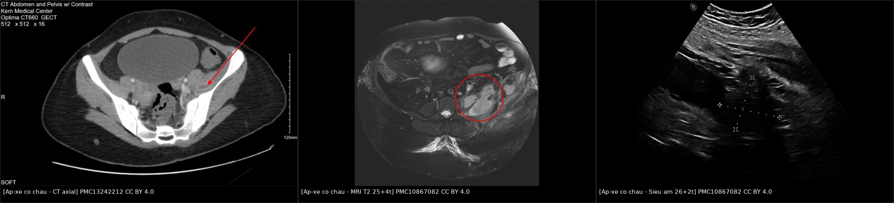
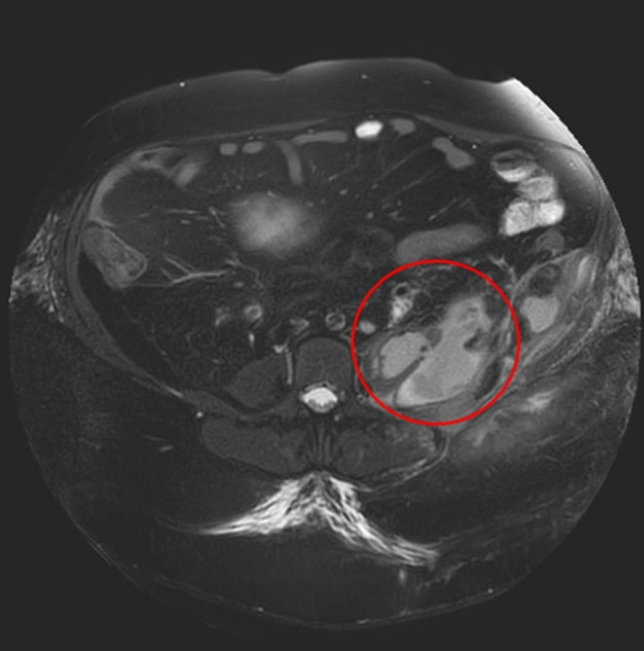
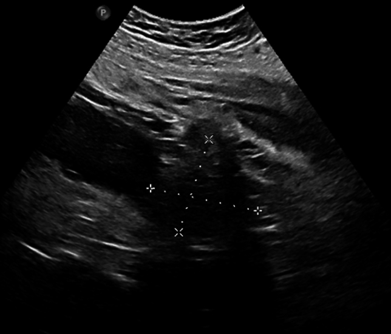
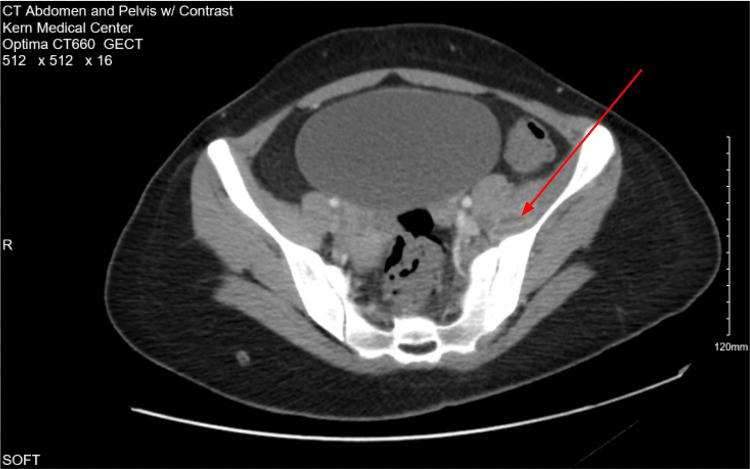

1928 — Áp-xe cơ chậu ở thai phụ: sốt VẮNG ở hơn nửa số ca, dẫn lưu qua da là ngưỡng can thiệp / Psoas abscess in pregnancy
Tags: pattern:o-dich pattern:viem pattern:phu-co pattern:mat-duong-vien-co vung:thai-nhi vung:co-chau vung:sau-phuc-mac protocol:sieu-am-bung protocol:MRI-khong-can-tu protocol:CT-lieu-thap
Mức chắc chắn (certainty): tổng hợp y văn (literature synthesis) — ghép tổng quan 10 ca áp-xe cơ chậu trong thai kèm 1 ca chỉ điểm có ảnh MRI + siêu âm (Arch Gynecol Obstet 2024, PMC10867082, CC BY 4.0), đoàn hệ 233 ca áp-xe cơ chậu người lớn để lấy ngưỡng sinh học – tử vong (BMC Infect Dis 2026, PMC13227668), và ca áp-xe cơ chậu sau thủ thuật phụ khoa có ảnh CT (Cureus 2026, PMC13242212, CC BY 4.0). Số nào nguồn không nêu ghi "chưa rõ".
Câu chốt: áp-xe cơ chậu (psoas abscess) là bệnh hiếm nhưng không được bỏ sót: chỉ 10 ca được báo cáo trong thai kỳ, xuất hiện 13–39 tuần, và sốt VẮNG ở hơn một nửa số ca — tam chứng Mynter (đau lưng + sốt + đi khập khiễng) chỉ đủ ở 4/10 ca. Vì thế bệnh nhân thường bị gọi là "đau lưng do thai" hoặc "thoát vị đĩa đệm", chẩn đoán muộn sau sinh, trong khi siêu âm + MRI đủ để chẩn đoán và dẫn lưu qua da + kháng sinh 14 ngày chữa khỏi mà không cần mổ (PMC10867082). Ngược lại, ở người lớn nói chung, áp-xe cơ chậu đã có sepsis 9,0% và tử vong trong viện 5,2% (PMC13227668) — nên "chờ xem" không phải lựa chọn.
1. Tổng quan bệnh học – cơ chế hình ảnh
1.1 Vì sao thai phụ dễ có áp-xe cơ chậu (TẠI SAO)
- Giải phẫu: cơ chậu–thắt lưng (iliopsoas) chạy từ T12–L5 và cánh chậu xuống mấu chuyển nhỏ xương đùi, nằm sát thận, niệu quản, đại tràng, tĩnh mạch chậu và khớp háng — nên ổ mủ từ 4 hướng đều đổ vào đây: máu (nguyên phát), cột sống, đường niệu, đường tiêu hóa/khớp háng (thứ phát, lan liên tục).
- Trong thai, thể nguyên phát chiếm ưu thế: 10 ca y văn có 8 nguyên phát / 2 thứ phát (PMC10867082). Lý do: thay đổi miễn dịch của thai (giảm miễn dịch qua trung gian tế bào) + ứ nước – nhiễm khuẩn đường niệu do progesterone và chèn ép cơ học.
- Con đường thực dụng nhất trong sản khoa là đường niệu: ứ nước thận → viêm thận–bể thận → đặt double J → thủng đài bể thận nhỏ (fornix rupture) không thấy được vì không được soi ngược dòng dưới huỳnh quang → nước tiểu thoát ra khoang sau phúc mạc (urinoma) → bội nhiễm → áp-xe cơ chậu. Ca chỉ điểm là đúng chuỗi này: đặt double J ở 15 + 3 tuần, rút ở 23 + 1 tuần, sốt và đau đùi trái tái phát, MRI ở 24 + 0 tuần cho ổ 20 × 10 cm (PMC10867082).
- Vì sao mủ tụ được trong cơ: cơ chậu là khoang kín giữa mạc chậu và mạc ngực–thắt lưng, ít mô mỡ, dẫn lưu bạch huyết kém → ổ nhiễm khuẩn nhanh chóng thành khối dịch có vỏ xơ thay vì tự tiêu.
- Vì sao đau kiểu "đau đùi khi gấp háng": cơ chậu–thắt lưng là cơ gấp háng mạnh nhất; căng cơ trên ổ viêm gây đau khi nâng chân, gấp háng chủ động, và tư thế đùi gấp–dạng nhẹ để giảm đau = dáng đi khập khiễng — đây là gốc của "tam chứng Mynter".
1.2 Vì sao nhìn thấy — vật lý từng phương thức
- Siêu âm (bước 1, không tia xạ): mủ là dịch giàu tế bào và protein → giảm hồi âm, không đồng nhất, có echo lợn cợn bên trong, tăng hồi âm phía sau (khuếch đại âm do dịch), không có tín hiệu Doppler trong lòng ổ (khác u đặc), và mất mặt phẳng mỡ sáng giữa cơ với cơ quan lân cận. Đây là lý do siêu âm đủ để đặt dẫn lưu ngay tại giường.
- MRI (bước 2, không tia xạ): mủ là nước tự do + xác tế bào → T2W/STIR rất sáng, T1W tối (khác máu bán cấp có T1 sáng do methemoglobin), DWI hạn chế khuếch tán – ADC thấp vì dịch nhớt và giàu tế bào (không khuếch tán tự do như nước tiểu trong bàng quang); vỏ áp-xe ngấm thuốc vì là mô hạt có mao mạch. MRI còn trả lời câu hỏi mà siêu âm không trả lời được: có viêm đĩa đệm–thân sống, có tổn thương thận, có urinoma hay không.
- CT (dự phòng): trung tâm ổ mủ 0–20 HU (gần nước), vỏ ngấm thuốc thì muộn, khí trong ổ hiếm nhưng là dấu hiệu đặc hiệu; cửa sổ xương cho thấy hủy xương đốt sống / gai chậu. CT dùng khi cần bản đồ dẫn lưu hoặc khi bệnh nhân không hợp tác được với MRI — luôn liều thấp, giới hạn lát.
- X-quang bụng/thắt lưng: mất bóng cơ chậu một bên, vôi hóa, liệt ruột — độ nhạy thấp, chỉ là dấu gợi ý; nhưng X-quang khung chậu vẫn cần khi đau khi vận động háng để loại trừ gãy/vỡ khớp.
1.3 Ngưỡng định lượng nằm lòng
| Đại lượng | Ngưỡng / con số | Ý nghĩa | Nguồn |
|---|---|---|---|
| Số ca áp-xe cơ chậu trong thai (y văn đến 2024) | 10 ca | Bệnh hiếm — nhưng chính vì hiếm nên dễ bỏ sót | PMC10867082 |
| Tuổi thai khi phát hiện | 13–39 tuần | Đa số ở quý II–III | PMC10867082 |
| Thể nguyên phát : thứ phát | 8 : 2 | Trong thai, đường máu chiếm ưu thế | PMC10867082 |
| Đủ tam chứng Mynter | 4/10 ca | Không đủ tam chứng không loại trừ | PMC10867082 |
| Sốt | vắng ở > 50% | Dấu hiệu "âm" mạnh nhất bị bỏ qua | PMC10867082 |
| Mổ lấy thai : sinh ngả âm đạo | 4 : 4 | Áp-xe không phải chỉ định mổ lấy thai | PMC10867082 |
| Sinh trước 35 tuần | 0 ca | Không có kết cục thai xấu được báo cáo | PMC10867082 |
| Kích thước ca chỉ điểm | 20 × 10 cm → 7 × 6 cm | Co lại sau 11 ngày dẫn lưu + kháng sinh | PMC10867082 |
| CRP ca chỉ điểm | 278 mg/L → 5 mg/L | Mốc theo dõi đáp ứng | PMC10867082 |
| Thời gian kháng sinh ca chỉ điểm | 14 ngày | Kèm rửa dẫn lưu 2 lần/ngày | PMC10867082 |
| Sốt trong đoàn hệ 233 ca người lớn | 39,1% | Sốt cũng không là triệu chứng chính | PMC13227668 |
| Đau hông lưng trong đoàn hệ 233 ca | 55,8% | Triệu chứng hay gặp nhất | PMC13227668 |
| Cấy dương tính | 38,7% | Cấy âm không loại trừ | PMC13227668 |
| Tác nhân | S. aureus 41,4% · E. coli 34,3% | Chọn kháng sinh theo 2 nhóm này | PMC13227668 |
| Sepsis / tử vong trong viện | 9,0% / 5,2% | Bệnh không "lành tính" | PMC13227668 |
| Đái tháo đường (yếu tố nguy cơ) | 28,8% | Hỏi bệnh nền trước khi kết luận "đau lưng thai kỳ" | PMC13227668 |
2. Mẫu hình + chẩn đoán phân biệt theo vị trí (gamut)
- Mẫu hình (pattern) cốt lõi: khối dịch một bên trong cơ chậu–thắt lưng, đường viền cơ mất, vỏ ngấm thuốc, kèm phù cơ xung quanh. Gamut được chia theo nguồn lan, vì nguồn quyết định kháng sinh và có cần mổ hay không.
- Nguồn từ máu (nguyên phát): S. aureus (hay gặp nhất), liên cầu, Klebsiella; ở vùng dịch tễ — lao cột sống (3/10 ca trong thai, 2 ca hai bên).
- Nguồn từ cột sống: viêm đĩa đệm–thân sống (đau lưng + phù tủy 2 đốt + đĩa) lan ra cơ chậu; cần MRI cột sống, không chỉ MRI bụng.
- Nguồn từ đường niệu: viêm thận–bể thận, áp-xe thận, sỏi niệu tắc, urinoma sau double J / sau chọc thận — hay gặp trong thai; creatinin dịch chọc hút ≈ huyết thanh là chốt loại áp-xe.
- Nguồn từ tiêu hóa: bệnh Crohn (1 ca trong thai), viêm ruột thừa, viêm túi thừa, thủng đại tràng sau soi.
- Nguồn từ khớp háng nhân tạo: nhiễm khớp nhân tạo biểu hiện bằng áp-xe cơ chậu — bỏ sót thì thay khớp lại nhiều lần vô ích.
- Bắt chước (mimic) không nhiễm: máu tụ cơ chậu (sau sinh, chống đông), u cơ – sarcoma, di căn cơ, lymphocele sau ghép thận, thoát vị đĩa đệm, đau dây thần kinh tọa, đau lưng – khung chậu do thai.
3. Bảng so sánh phân biệt (ma trận đối chiếu)
| Thực thể (entity) | Hình ảnh điển hình | Chốt vào (rule-in) | Chốt loại (rule-out) | Gợi ý xác nhận |
|---|---|---|---|---|
| Áp-xe cơ chậu | Khối dịch trong cơ, vỏ mỏng ngấm thuốc, phù cơ quanh ổ, mất mặt phẳng mỡ với thận/đại tràng | Vỏ ngấm thuốc + hạn chế khuếch tán + mật độ 0–20 HU trung tâm | Mật độ mỡ −40 đến −120 HU, không vỏ, không hạn chế khuếch tán | Chọc hút dưới siêu âm: mủ + cấy; creatinin dịch thấp hơn huyết thanh |
| Urinoma | Khối dịch quanh thận/niệu quản, hình bầu dục theo đường thoát nước tiểu, thành mỏng đều | Creatinin dịch chọc hút ≈ creatinin huyết thanh; tiền sử can thiệp niệu quản | Không có vỏ ngấm thuốc, dịch "sạch" trên MRI, bệnh nhân không sốt | Đo creatinin dịch — xét nghiệm rẻ nhất và quyết định nhất |
| Máu tụ cơ chậu | Khối trong cơ, T1W sáng khi bán cấp (methemoglobin), không vỏ | T1 sáng + không hạn chế khuếch tán mạnh + Hct dịch giảm dần | Không sốt, không tăng CRP đáng kể, có chống đông/sau sinh | Theo dõi kích thước; chọc hút chỉ khi chẩn đoán chưa rõ |
| Viêm cơ chưa hóa mủ | Phù cơ lan tỏa, T2W sáng, không có ổ dịch khu trú | Phù cơ + đau + CRP tăng, chưa có khoang dịch | Không có vỏ, không có ổ dịch | Kháng sinh trước, MRI lại sau 48–72 giờ |
| Viêm đĩa đệm–thân sống | Phù tủy 2 đốt kề đĩa, đĩa tăng tín hiệu, viền ngấm, áp-xe dưới dây chằng | Hai đốt + đĩa + hủy xương trên CT | Cơ chậu bình thường, không ổ dịch trong cơ | MRI cột sống có tiêm; cấy máu/sinh thiết đĩa |
| Sarcoma cơ – u đặc | Khối đặc, ngấm thuốc không viền, có vùng hoại tử, không hạn chế khuếch tán đồng nhất | Khối đặc có thành phần mô mềm thật trên T1/T2 | Không sốt, CRP bình thường, không đau kiểu viêm | Sinh thiết có hình ảnh — không chọc mù |
| Nhiễm khớp háng nhân tạo | Nang hoạt dịch cơ chậu, khí, mất đường viền cơ, lỏng/vỡ quanh implant | Khí + nang cơ chậu + tiền sử thay khớp | Không có implant, không khí | Chọc khớp; cấy dịch khớp trước khi mổ lại |
| Thoát vị đĩa đệm / đau thai kỳ | MRI cột sống: lồi đĩa chèn rễ, cơ chậu bình thường | Đau theo rễ, không ổ dịch | Có ổ dịch trong cơ = loại | Không cần chọc hút |

4. Protocol chụp + hệ phân độ/điểm chuẩn hóa
4.1 Trình tự hình ảnh trong thai
- Siêu âm bụng – hông bên đau (bước 1, ngay tại giường): tìm khối giảm hồi âm trong cơ chậu, so sánh hai bên, đo hai chiều lớn nhất, đánh dấu vị trí đặt dẫn lưu; kèm siêu âm thận – niệu quản để tìm ứ nước, sỏi, urinoma. Thêm Doppler xung đo chỉ số sức cản (RI) của động mạch thận khi nghi tắc nghẽn — công cụ được nêu là đã kiểm chứng cho rối loạn tắc niệu quản (PMC10867082).
- MRI 1,5 T không cản quang (bước 2): T2W fat-sat/STIR axial + coronal, DWI/ADC, kèm chuỗi cột sống thắt lưng nếu đau lưng là triệu chứng chính. Gadolinium chỉ khi cần phân biệt vỏ áp-xe với mô đặc; có thể dùng trong thai khi có chỉ định, không cần ngừng cho con bú (ACR).
- CT liều thấp (bước 3, dự phòng): khi cần bản đồ dẫn lưu phức tạp, khi MRI không thực hiện được, hoặc nghi biến chứng (thủng, khí trong ổ, chảy máu).
- Không chọc mù khối chưa xác định bản chất: chọc hút chỉ sau khi có ảnh mặt cắt, và luôn gửi creatinin dịch cùng cấy.
4.2 Ngưỡng can thiệp và theo dõi
- Chỉ định dẫn lưu: ổ dịch đã hóa mủ, có vỏ, hoặc không đáp ứng kháng sinh sau 48–72 giờ, hoặc ổ lớn gây chèn ép/đau không kiểm soát. Ca chỉ điểm: ổ 20 × 10 cm được dẫn lưu qua da dưới siêu âm thành công ở 24 + 0 tuần, kể cả bệnh nhân BMI 45 kg/m² (PMC10867082).
- Kỹ thuật: catheter 8–12 Fr (cỡ theo độ nhớt mủ và độ sâu), rửa 2 lần/ngày; nếu catheter tuột (đã xảy ra ở 24 + 5 tuần trong ca chỉ điểm) → đặt lại ngay vào ổ còn lại, không chờ.
- Kháng sinh: theo S. aureus và trực khuẩn Gram âm đường ruột (ampicillin/sulbactam hoặc piperacillin/tazobactam; ca chỉ điểm dùng piperacillin/tazobactam 1,5 g × 3/ngày, vi khuẩn Prevotella bivia); 14 ngày trong ca chỉ điểm, 2–4 tuần với ổ lớn — ngưỡng thời gian chưa có thử nghiệm ngẫu nhiên ở thai, ghi rõ "chưa rõ chuẩn".
- Theo dõi: CRP + WBC mỗi 48–72 giờ, siêu âm lại mỗi 3–7 ngày; rút dẫn lưu khi lâm sàng hết sốt, dịch < 10–20 mL/ngày và CRP giảm > 50% (mốc thực hành, chưa có chuẩn thống nhất). Ca chỉ điểm rút ở 26 + 6 tuần với CRP 5 mg/L và WBC 10 × 10⁹/L.
- Phối hợp sản khoa — điều KHÔNG làm: không mổ lấy thai vì áp-xe. Trong 10 ca y văn, 4 mổ lấy thai / 4 sinh ngả âm đạo, không ca nào sinh < 35 tuần, không có kết cục thai xấu (PMC10867082). Sản khoa chỉ can thiệp vì chỉ định sản khoa, không vì ổ mủ sau phúc mạc.
flowchart TD A[Thai phu dau lung hoac dau dui, co hoac khong sot] --> B[Sieu am bung hong + than nieu quan] B -->|Khoi dich trong co chau| C[MRI 1,5T khong can quang: T2 fat-sat + DWI] B -->|Khong ro| C C -->|O dich co vo ngam thuoc| D[Choc hut chan doan: gui creatinin dich + cay + te bao] D -->|Creatinin dich thap hon huyet thanh| E[Ap-xe: dan luu qua da 8-12 Fr + khang sinh] D -->|Creatinin dich bang huyet thanh| F[Urinoma: xu ly nguyen nhan tac nghe, khong dat dan luu mu] E --> G[Theo doi CRP va WBC moi 48-72 gio, sieu am lai 3-7 ngay] G -->|Khong giam sau 48-72 gio| H[CT lieu thap: kiem tra o ton luu, gas, chay mau] G -->|CRP giam, dich it| I[Rut dan luu, tiep tuc khang sinh du 14 ngay] H --> J[Dan luu lai hoac phoi hop ngoai khoa]
Phân tầng độ nặng (không có hệ phân độ riêng cho áp-xe cơ chậu — dùng Sepsis-3): có sepsis/septic shock là mốc chuyển hồi sức; trong đoàn hệ 233 ca, 9,0% có sepsis và 5,2% tử vong trong viện (PMC13227668).
5. Biến thể bình thường và cạm bẫy
- Bất đối xứng cơ chậu là bình thường: cơ chậu to hơn bên phải ở người thuận phải, và to lên ở vận động viên; chỉ gọi bệnh khi có ổ dịch, phù, hoặc mất mặt phẳng mỡ — không dựa vào "cơ to hơn".
- Cạm bẫy 1 — "không sốt thì không phải áp-xe": sốt vắng ở > 50% ca trong thai (PMC10867082) và chỉ 39,1% trong đoàn hệ người lớn (PMC13227668). Đau cơ – đùi kiểu "gấp háng đau" + CRP tăng đủ để chụp.
- Cạm bẫy 2 — đọc MRI cột sống mà bỏ cơ chậu: ca chỉ điểm khởi đầu bị nghĩ thoát vị đĩa đệm; ổ mủ chỉ lộ ra khi MRI lấy hết trường nhìn cơ chậu. Đây là satisfaction of search kinh điển: thấy bất thường đĩa là dừng tìm.
- Cạm bẫy 3 — chọc hút rồi gọi "mủ" mà không đo creatinin: urinoma bội nhiễm trông như áp-xe trên mọi chuỗi xung; creatinin dịch ≈ huyết thanh là chốt loại, và điều trị là giải quyết tắc nghẽn, không phải đặt dẫn lưu mủ.
- Cạm bẫy 4 — quy "đau lưng" cho thai: nếu triệu chứng kéo dài và tăng dần, phải chụp lại; trong y văn nhiều ca chỉ được chẩn đoán sau sinh vì triệu chứng bị coi là của thai (PMC10867082).
- Cạm bẫy 5 — coi "ổ nhỏ lại" là khỏi: ca chỉ điểm giảm 20 × 10 cm → 7 × 6 cm trong 11 ngày nhưng vẫn cần dẫn lưu và kháng sinh đủ liệu trình; kích thước giảm không thay thế theo dõi CRP.
- Cạm bẫy 6 — dùng CT sớm ở thai phụ: CT chỉ để lập kế hoạch dẫn lưu hoặc khi nghi biến chứng; MRI/siêu âm trả lời được gần như toàn bộ câu hỏi chẩn đoán.
6. Tự lượng giá — Blind Quiz ngay trên trang tĩnh
Ca 1 — Thai phụ 24 tuần, đau đùi trái, KHÔNG sốt

- Gợi ý lâm sàng (clinical context): 38 tuổi, BMI 45 kg/m², đã đặt và rút double J vì ứ nước nhiễm khuẩn; đau và yếu chân trái khi nâng chân, không sốt, CRP 278 mg/L, WBC 17 × 10⁹/L.
- Câu hỏi: Khối dịch nằm ở khoang nào và lan theo đường nào? Nêu 3 chẩn đoán phân biệt? Dấu hiệu nào trên ảnh chốt bản chất áp-xe thay vì urinoma?
Bấm để hiện đáp án (findings + chẩn đoán)
- Dấu hiệu (findings): khối tăng tín hiệu T2 không đồng nhất, nhiều thùy trong cơ chậu–thắt lưng trái (khoanh đỏ), mất mặt phẳng mỡ giữa cơ và thận trái; ổ đo 7 × 6 cm ở lần chụp này — trước đó 11 ngày là 20 × 10 cm trên MRI ngoài viện.
- Chẩn đoán (diagnosis): áp-xe cơ chậu trái sau đặt double J vì ứ nước nhiễm khuẩn. Chốt loại urinoma bằng creatinin dịch chọc hút thấp hơn huyết thanh; chốt loại máu tụ bằng T1 không sáng và bệnh cảnh nhiễm.
- Nguồn ảnh: Arch Gynecol Obstet 2024 (PMC10867082), Fig. 2 — CC BY 4.0.
Ca 2 — Cùng bệnh nhân, 6 ngày sau

- Gợi ý lâm sàng: đang dẫn lưu qua da, rửa 2 lần/ngày, CRP đang giảm.
- Câu hỏi: Hai dấu hiệu siêu âm nào xác nhận dịch tự do trong ổ? Khi nào được rút dẫn lưu?
Bấm để hiện đáp án (findings + chẩn đoán)
- Dấu hiệu (findings): ổ giảm hồi âm, echo lợn cợn, thước đo 5 × 5 cm; không có tín hiệu Doppler trong lòng ổ; đuôi tăng hồi âm phía sau.
- Chẩn đoán (diagnosis): ổ áp-xe đang thu nhỏ dưới điều trị — rút dẫn lưu khi hết sốt, dịch < 10–20 mL/ngày, CRP giảm (ca này rút ở 26 + 6 tuần với CRP 5 mg/L).
- Nguồn ảnh: Arch Gynecol Obstet 2024 (PMC10867082), Fig. 3 — CC BY 4.0.
Ca 3 — Nữ 21 tuổi sau thủ thuật phụ khoa, đau hai chân, không đi được

- Gợi ý lâm sàng: sốt, mạch nhanh, WBC 32.000/µL; đau lan hai chân, không đứng được; cấy máu Streptococcus pyogenes.
- Câu hỏi: Mô tả đậm độ và vỏ của ổ? Vì sao không đặt dẫn lưu ở ca này?
Bấm để hiện đáp án (findings + chẩn đoán)
- Dấu hiệu (findings): ổ giảm đậm độ, không đồng nhất trong cơ chậu trái (mũi tên đỏ) ở thì có cản quang, vỏ ngấm thuốc mảnh, phù mô mỡ quanh cơ; không có khí.
- Chẩn đoán (diagnosis): áp-xe cơ chậu do S. pyogenes sau nạo hút thai — ổ còn nhỏ, chưa có vỏ dày nên không dẫn lưu được, điều trị kháng sinh đích theo cấy máu và hồi phục (Cureus 2026, PMC13242212).
- Phản biện: ca này không phải thai đang tiến triển, nên dùng làm ví dụ hình ảnh CT, không dùng để suy ra tỷ lệ trong thai.
- Nguồn ảnh: Cureus 2026 (PMC13242212), Fig. 1 — CC BY 4.0.
Bài liên quan chéo
- 1923 – Áp-xe thận – quanh thận ở thai phụ
- 1921 – Nhiễm khuẩn niệu và viêm thận–bể thận ở thai phụ
- 1922 – Sỏi niệu và đặt stent sau sinh
- 1721 – Nhiễm khuẩn stent niệu quản
- 1924 – Sốc nhiễm khuẩn niệu ở thai phụ
Ảnh
- 3 ảnh gốc + 1 ảnh ghép, tất cả CC BY 4.0 — chi tiết Fig/PMCID trong
images/CREDITS.md. - Không tải ảnh từ PMC13227668 (CC BY-NC-ND, chỉ dùng số liệu) và không dùng Radiopaedia/AuntMinnie cho bài này.
Không dùng để chẩn đoán độc lập khi chưa có người hướng dẫn.